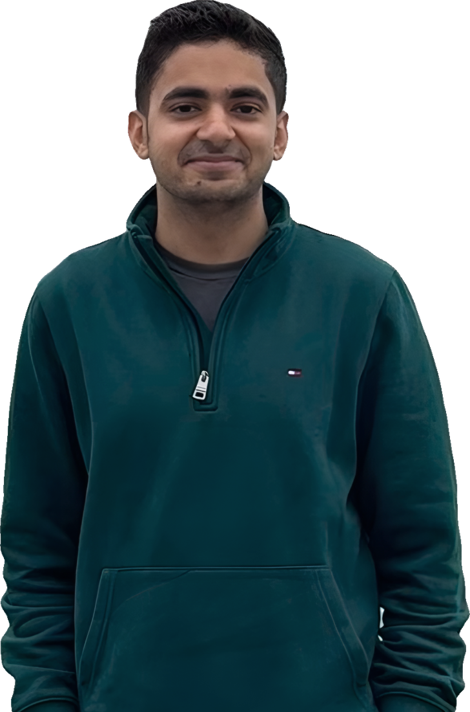

Home / About
Most evenings, I'm building something.
I'll admit I'm a workaholic, and learning to code gave that energy somewhere to go. I don't have to wait for someone else to make the tool I want. When I do switch off, it's chess, badminton, travel, or another go at the piano.

Background
Numbers by training. Systems by temperament.
I work in finance and operations at a UK tech company. The software started because I kept needing tools that didn't exist yet, so I built them. I haven't stopped since.
- Finance and operations manager at a UK tech company. I joined as the intern in 2021.
- 50+ live dashboards built on product, marketing and finance data; reporting automation that saves 40+ hours a month.
- ACMA CGMA (CIMA): qualified 2026, on top of an MSc in Finance from Loughborough.
- I build in Python and TypeScript at night: AI agents, search pipelines, dashboards and a Chrome extension. Self-taught, like the SQL and Power BI before it.
- Guardrails on my own AI tools. I built 11 around my AI coding assistant: hooks that block deletions, protect secrets, catch fix-break loops and review pushes. It can edit, build and deploy freely. Anything destructive stops for my approval.
- Grew up in the family textile business in India.
- Four languages (English, Hindi, Sindhi, Marathi), and a school governor at a local primary.